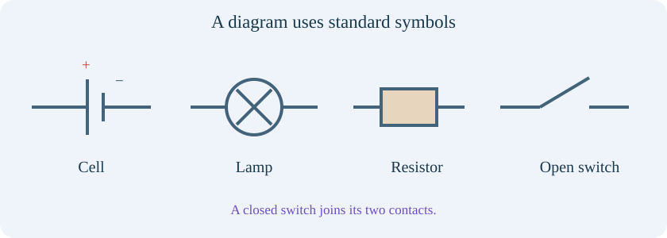
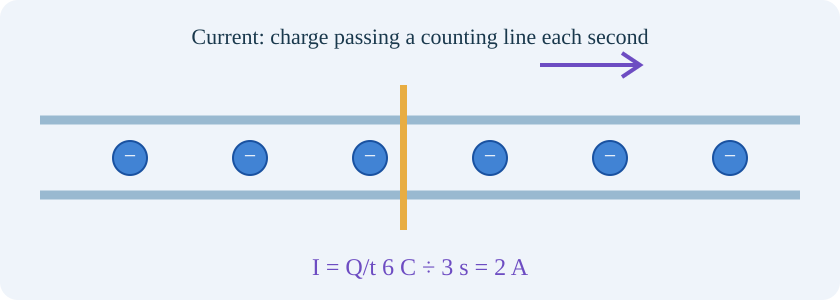
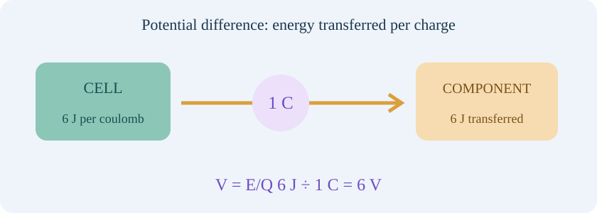
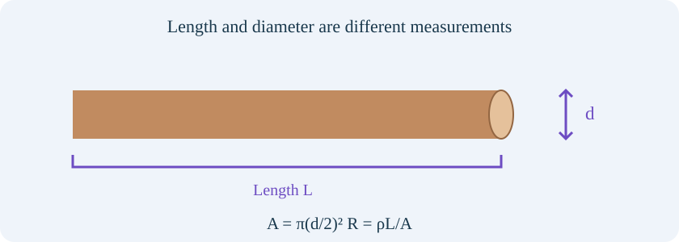
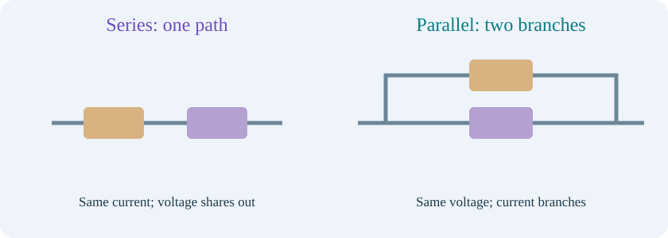

IDEA 01Build the complete path before asking what flows.

An electric circuit is a connected path through components. A cell transfers energy from its chemical store to the circuit; a battery contains connected cells. A wire is a conducting connection, a lamp transfers electrical energy to light and heating, and a switch opens or closes a path.
A simple steady direct-current circuit needs a complete conducting loop. “Direct current”, or DC, means the current keeps one direction. Closing a switch completes a path; opening it stops sustained current in this simple loop. Electrons are already present throughout metal wires before the switch closes.
A circuit diagram uses symbols rather than realistic drawings. A cell has a long positive line and a short negative line; a lamp is a circle with a cross; a resistor can be a rectangle; a switch is a break with a movable contact. A junction is a point where wires join. Crossing lines without a junction dot are not necessarily connected.
Remember: closed loop, continuing current. A cell supplies energy; it does not manufacture the moving charges. Our experiments use a virtual low-voltage DC supply, not a mains socket.
IDEA 02Current tells you how fast charge passes a point.

Current is the rate of flow of electric charge. Rate means amount per unit time. We use I for current, Q for transferred charge and t for elapsed time. Current is measured in amperes, usually called amps (A). One amp means one coulomb passes a point each second.
Use I = Q/t. For example, if 6 C passes a point in 3 s, I = 6/3 = 2 A. Here C is coulomb and s is second. Conversely, Q = It: a steady current of 0.5 A transfers 2 C in 4 s. Current is not the total charge stored in a component.
Steady means not changing with time; series means one after another in a single path. In a steady series loop there is no place for charge to accumulate, so the current is the same before and after a lamp. The lamp transfers energy; it does not use up electrons. At a junction, total current entering equals total current leaving, so branches can carry different currents.
An ammeter measures current and is connected in series, inside the path being measured. Its very low resistance makes it unsuitable as a direct connection across a supply. In metals, electrons drift from negative towards positive in the external circuit; conventional current is defined in the opposite direction, positive to negative.
IDEA 03Voltage tells you energy transferred per coulomb.

Potential difference, often called voltage, compares two points. It is the energy transferred per unit charge between them. We use V for potential difference and E for energy transferred: V = E/Q. One volt means one joule per coulomb, so 1 V = 1 J/C. A joule (J) is a unit of energy.
Across a 6 V component, each coulomb transfers 6 J of energy. If 2 C passes, E = VQ = 6 × 2 = 12 J. Voltage is not a flow rate: 6 V alone does not tell you the current without knowing the rest of the circuit.
A voltmeter compares the two sides of a component, so connect it in parallel, across those two points. Parallel connections share the same pair of connection points. Its high resistance makes its own current very small. “Across” and “through” help: measure voltage across; measure current through.
The pizza analogy makes energy per charge visible: couriers represent charge packets; pizzas represent energy; the shop represents the cell; and the party represents the energy-transferring component. Couriers return after handing over pizzas. In a real circuit, energy transfer involves the electromagnetic field, not little pizzas stuck to electrons.
IDEA 04Resistance changes the current, without consuming charge.
Resistance describes how strongly a component opposes current for a given potential difference. Its symbol is R and unit is the ohm (Ω). At a particular operating point, R = V/I. If a 6 V potential difference produces 0.3 A, R = 6/0.3 = 20 Ω.
A metal contains mobile electrons and positive ion cores. An ion is a particle with net charge; here the cores are positive within the shared mobile-electron system. The ions vibrate about positions in a lattice, rather than travelling around the wire with the current. Scattering of electrons by the material limits their net drift and transfers energy. Their microscopic random motion is much faster than the small net drift shown by a circuit arrow.
A resistor is a component designed to provide resistance. In a metal wire at ordinary temperatures, making the wire longer raises its resistance; increasing its cross-sectional area lowers resistance. The material and temperature also matter. Cross-sectional area means the area of a slice taken across the wire, rather than its outer surface area.
Remember: energy transfers; charge continues. The obstacle picture represents resistance qualitatively. Real electrons do not run around a playground, get tired, become trapped at a resistor or disappear there.
IDEA 05Ohm’s law: compare voltage and current fairly.
For an ohmic conductor at constant temperature and other unchanged physical conditions, current is directly proportional to potential difference. Direct proportion means multiplying one by a factor multiplies the other by the same factor. Resistance stays constant: V = IR, I = V/R and R = V/I.
In these formulas, V is potential difference in volts, I is current in amps and R is resistance in ohms. For a 20 Ω resistor at 2 V, I = 2/20 = 0.10 A. At 4 V, I = 0.20 A. At 6 V, I = 0.30 A. Doubling voltage doubled current because we kept the resistor and its temperature fixed.
Plot voltage on the horizontal x-axis and current on the vertical y-axis. An ohmic resistor gives a straight line through the origin, (0,0). The gradient is rise/run = ΔI/ΔV = 1/R, in A/V: a steeper I–V line means lower resistance. Δ, pronounced delta, means “change in”. If you instead plot V vertically, the gradient is R.
A filament lamp heats up and its resistance changes, giving a curved I–V graph; a diode behaves differently again. R = V/I at a non-zero operating point is not proof of Ohm’s law. At V = I = 0 the ratio 0/0 is undefined, so use the line’s gradient or a non-zero point.
IDEA 06What affects a wire’s resistance?

For a uniform wire, R = ρL/A. R is resistance in ohms, ρ (rho) is resistivity in ohm metres (Ω m), L is length in metres and A is cross-sectional area in square metres. Resistivity describes the material at a stated temperature. Do not confuse this A for area with the unit symbol A for amperes.
A round wire has A = π(d/2)², where d is its diameter in metres and π is approximately 3.14159. Doubling length doubles resistance; doubling diameter quadruples area and therefore divides resistance by four, if material and temperature stay the same. Diameter is the distance across the circular wire.
For ordinary metallic conductors over a limited temperature range, warming generally raises resistance because lattice vibrations increase scattering. In our approximate model, ρ(T) = ρ₂₀[1 + α(T − 20)]. T is temperature in °C; ρ₂₀ is resistivity at 20°C; α (alpha) is a fractional change per °C. Different materials have different coefficients.
The wire lab uses a fixed 0.100 A measuring current and an externally controlled temperature. Its small voltage is often displayed in millivolts (mV), where 1000 mV = 1 V. It neglects self-heating and lead resistance to isolate one factor at a time; real measurements must consider both.
IDEA 07Series and parallel: follow the paths.

Series components lie one after the other along a single path. The current is the same through them, their potential differences add to the supply, and total resistance adds: R_total = R₁ + R₂. A subscript 1 or 2 identifies the component; “total” means the equivalent value for the entire network.
For 20 Ω and 40 Ω in series, R_total = 60 Ω. At 6 V, I = 6/60 = 0.10 A. The potential differences are V₁ = IR₁ = 2 V and V₂ = IR₂ = 4 V. Their sum is 6 V. Adding a series resistor lowers the current for an unchanged ideal supply voltage.
Parallel branches connect across the same pair of junctions, so they share the same potential difference. Their currents add. For two resistors, 1/R_total = 1/R₁ + 1/R₂, or R_total = R₁R₂/(R₁ + R₂). The equivalent resistance is lower than either individual branch resistance.
For 20 Ω and 40 Ω in parallel at 6 V, I₁ = 6/20 = 0.30 A and I₂ = 6/40 = 0.15 A. Supply current is 0.45 A, so R_total = 6/0.45 ≈ 13.33 Ω. Adding a branch provides another path; it does not force the same current through each branch.
IDEA 08Power, heating and real electrical choices.
Power is the rate of energy transfer, not the amount of energy. P = E/t, where P is power in watts (W), E energy in joules and t time in seconds. One watt is one joule per second. Electrical power is also P = VI, with voltage in volts and current in amps.
For a 6 V resistor carrying 0.30 A, P = 6 × 0.30 = 1.8 W. Over 10 s, E = Pt = 18 J. For an ohmic resistor, substituting V = IR gives P = I²R, where I² means I × I. At fixed current, more resistance gives more heating; at fixed voltage, P = V²/R, so more resistance gives less total power.
A heater deliberately transfers energy to thermal stores; a filament lamp produces light as well as heating. At the same transmitted power, higher transmission voltage allows lower current and therefore reduces I²R cable losses. Raising transmission voltage does not itself reduce a cable’s resistance.
At home, fuses and circuit breakers interrupt excessive current; residual-current protection detects a current imbalance; protective earth provides a fault path for suitable equipment. These devices have different jobs. Our low-voltage virtual circuits illustrate principles and do not teach work on household mains. Prefix kilo means 1000: 1 kW = 1000 W, while 1 mA = 0.001 A.